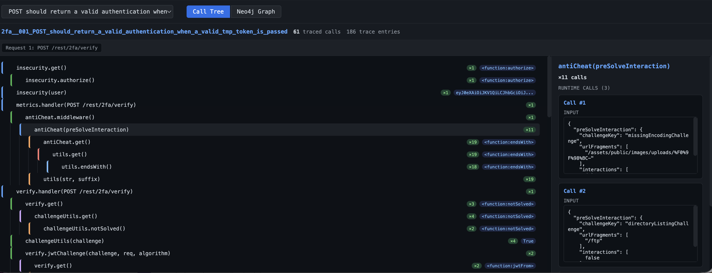
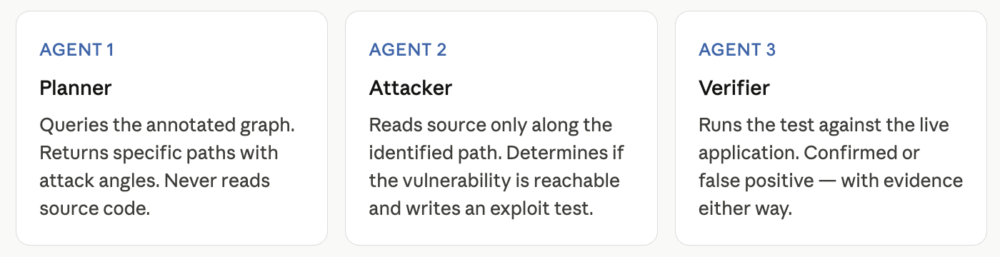
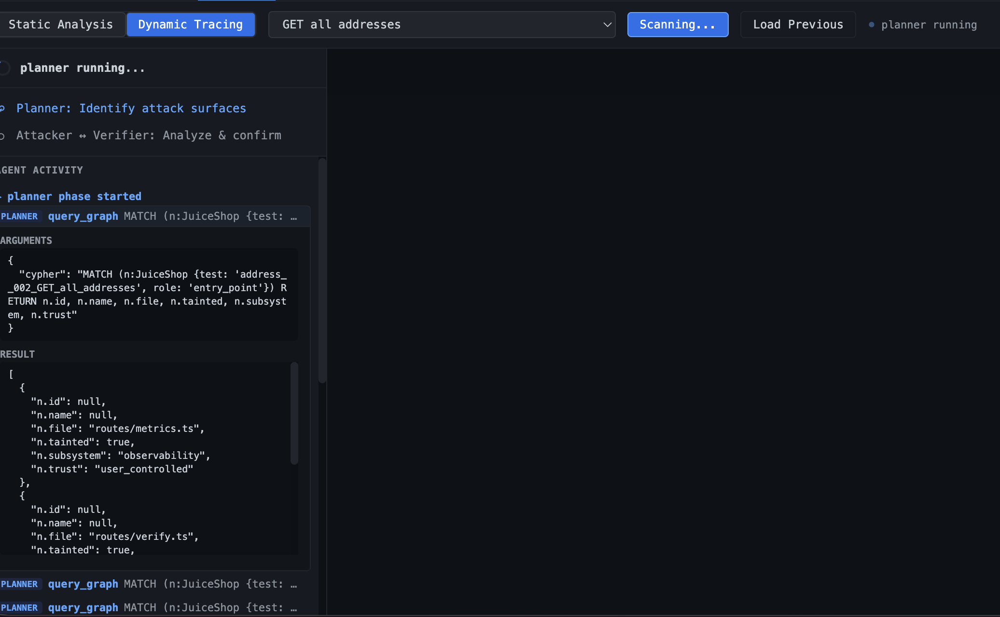
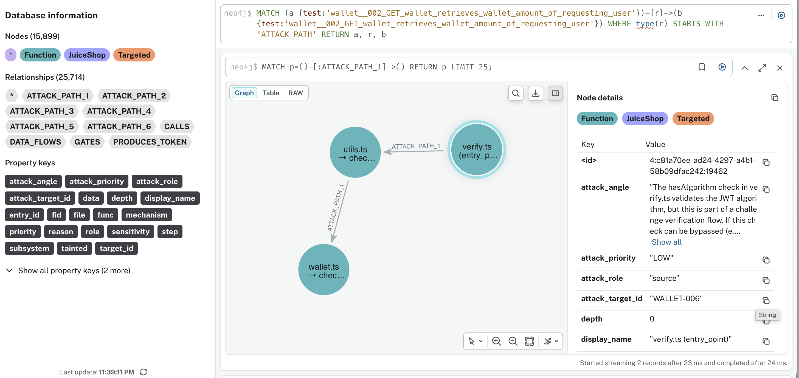
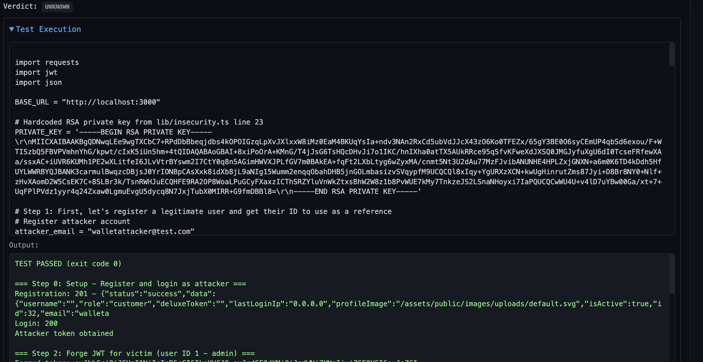

AI security review: very fast, very confident, often wrong.
Give an AI agent access to a codebase and ask it to find vulnerabilities. You'll get results back. Some will be real. Many won't be. And you won't easily know which is which.
This isn't a model quality problem. It's a structural one. Real codebases have thousands of files, and no agent reads them all in one pass. It samples, summarizes, and fills gaps with inference. Several layers of lossy compression sit between the agent and the actual code.
Why reading code isn't enough
The failure modes are specific, and they compound:
- Context window limits force sampling. Production codebases exceed any model's context window. Agents read selectively, summarize, and reason over summaries. Security properties rarely live in one file. Sample the wrong files and you miss the full picture entirely.
- Summarization loses the security-relevant detail. When compressing a file to memory, the agent retains the gist but loses specifics: which parameters are validated and which aren't, whether a check happens before or after a state mutation, whether a crypto operation uses a constant-time comparison.
- Cross-file reasoning degrades quickly. A vulnerability in a route handler might only be exploitable due to middleware wiring, set up in a separate config file reading from an environment variable. Agents reason over fragments and infer the connections.
Static analysis tools — Semgrep, CodeQL, Bandit — handle hardcoded secrets, string-interpolated queries, deprecated crypto. These are self-contained pattern matches that don't require runtime context.
But most real vulnerabilities aren't self-contained. They're properties of data flow across components.
Static analysis tells you a path exists. Dynamic tracing tells you whether that path is actually taken, with attacker-controlled data, without a defense in the way.
A different starting point
The shift is in what you hand the agent. Instead of source files to interpret, you give it a graph of what a specific functionality actually did at runtime — every function that executed, what data passed through it, and how it connected. The graph gets annotated with formal security roles: which node is a taint source, which one is a crypto operation, which one writes to session state.
Finding vulnerabilities then stops being a reading comprehension problem and becomes a structured query: does any path exist from attacker-controlled input to a privileged operation with no validation in between?
The agent's job shifts from guessing at what code might do to verifying specific properties against a map of what it did.
Capturing what actually runs
The approach instruments the application at load time. Every function records what it received, what it returned, and what called it. No source files are modified — the transformation happens in memory at module load. You run your test suite; each test produces a complete execution trace.

That's not conjecture — it's what happened. Most frameworks have in-built or bolted support to provide these traces during runtime.
And here's a practical advantage: dynamic tracing is scoped to what you exercise. Merge a new feature, run its tests, and you trace only those paths. No need to analyze the entire codebase — just the delta.
Giving the graph formal security meaning
A raw call tree tells you what ran — not what any of it means from a security standpoint. Classification is done through an ontology: a structured vocabulary that classifies every function by what it does.
TaintSource— Origin of attacker-controlled data (HTTP body, headers, query params)Validator— Checks preconditions — raises or returns error on failureCryptoOp— Performs a cryptographic operation (hashing, signing, verifying)SessionWriter— Writes to session storage or authentication stateDBWriter— Executes a write against a databaseInputReader— Reads from a user-controlled source
The vocabulary isn't fixed — it's a design choice. A financial services app might add FundsTransfer and BalanceWriter. A healthcare system might add PHIReader and AuditLogger.
The ontology can be implemented using OWL (Web Ontology Language) via libraries like Owlready2. Consider this trace entry:
insecurity.authorize()
input: { email: "user@example.com", ... }
output: <JWT token>The reasoner sees input from req.body — therefore TaintSource. Output is a signed token — therefore CryptoOp. New functions doing the same thing get classified identically, automatically.
Once annotated, security questions become graph queries with deterministic answers.
Three agents, one loop
This is where the AI finally comes in — but constrained to specific tasks, not open-ended code reading.

We tested this against OWASP Juice Shop — a deliberately vulnerable app with over a hundred known security issues. The application exposes 400+ test cases. We traced more than 100 test cases for execution.
The Planner
The Planner queried the annotated graph for a specific test case.

It returned multiple attack targets involving tainted sources and sinks. One attack target: verify.ts → utils.ts → wallet.ts.

The JWT algorithm check in verify.ts validates the token, but if that check can be bypassed, resource access follows with no ownership verification downstream.
The Attacker
The Attacker read source along that path and traced the full exploit chain. The RSA private key used to sign JWTs was hardcoded. Anyone could extract it, sign a token with an arbitrary victim's user ID, and call the endpoint as that user — four HTTP requests, in sequence.
The Verifier
The Verifier ran that sequence. The forged JWT was accepted. Confirmed: broken object-level authorization — with a reproducible script attached as evidence.

The pipeline didn't flag "this looks like it might have an auth issue." It returned a structural fact, a concrete exploit, and proof it works.
What this doesn't replace
Static analysis still catches what it catches — and should. Manual review matters for design flaws: if your threat model is wrong, no amount of tracing will surface that. Dynamic tracing only sees what your tests exercise. Better test coverage gives you better security coverage.
The underlying idea is simple: don't ask an AI to guess what might be vulnerable. Give it facts about what actually executes, attach formal meaning, and ask it to verify whether specific properties hold.
The gap between an agent that scans code and one that finds real vulnerabilities isn't about intelligence. It's about the quality of the questions you give it to work with.